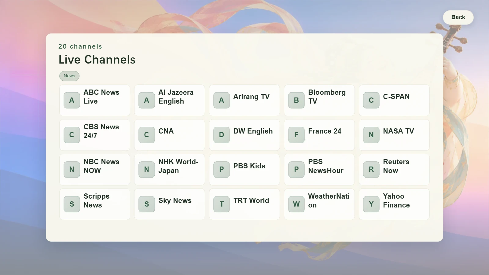
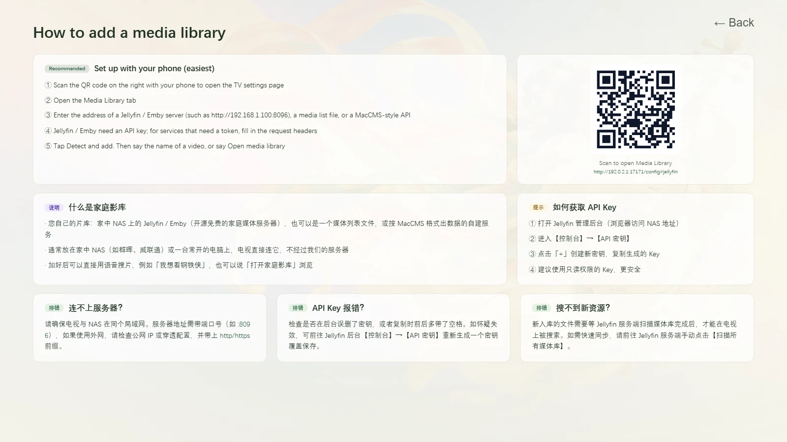
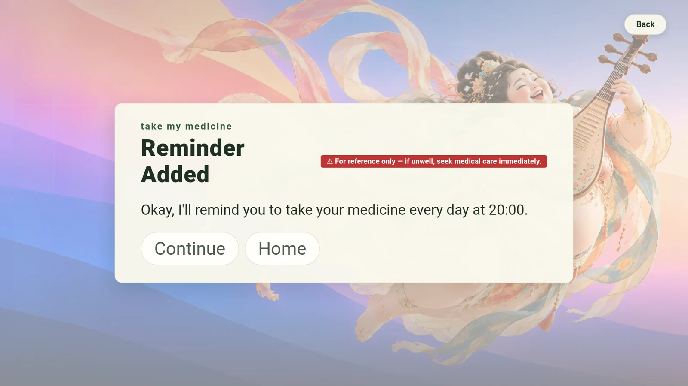
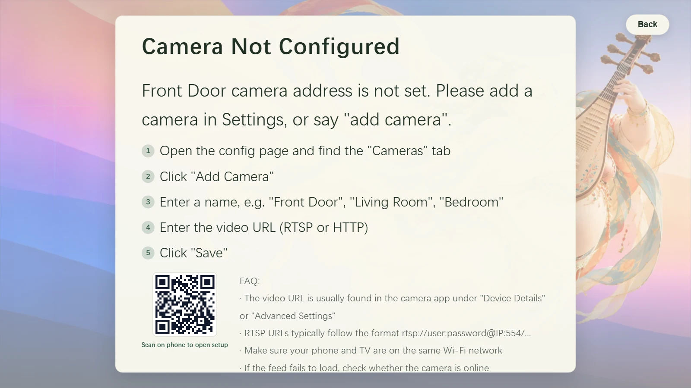
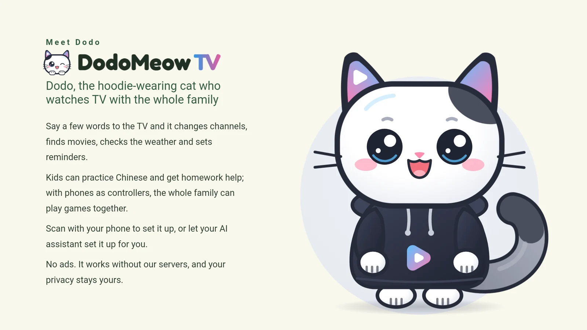
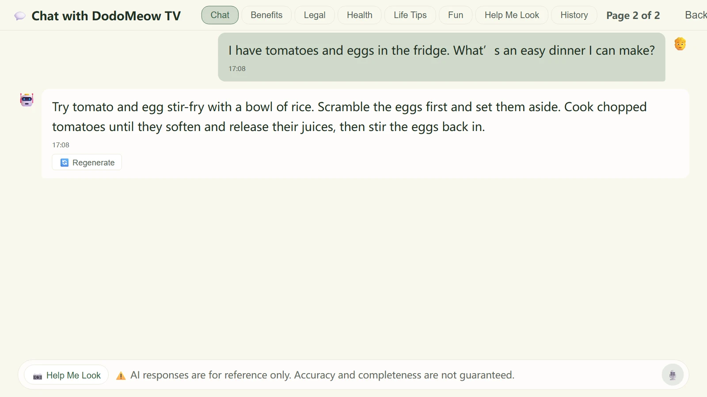
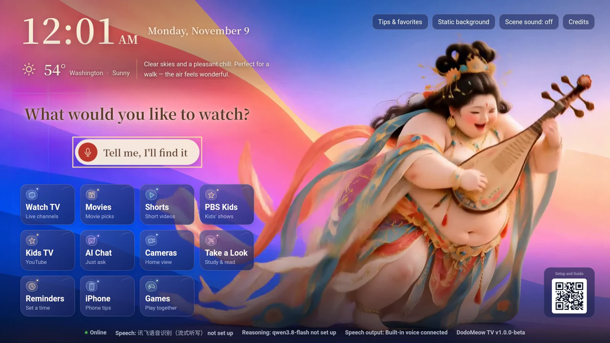

A Day with DodoMeow
Page 1
Watch live TV
- Select Watch TV on the home screen, or hold OK, say “Watch TV” after the tone, and release the button.
- Use the arrow keys to choose a channel and press OK to play it. You can also say its name.
- Say “Next channel” while watching to move to the next station.
The mainland China edition needs a live TV source first. The image shows channels on the international edition.

Page 2
Find films
- Open the movie recommendations, or hold OK on the home screen and say the title you’re looking for.
- Pick a poster with the remote. To search your own on-demand catalog, first add a source in the phone setup page.
Catalogs and playback availability depend on your region and the sources you’ve added.

Page 3
Open your media library
- Open the home media library section in the phone setup page.
- Enter the address of your Jellyfin, Emby, or other supported media server, then detect and add it.
- On the TV, say “Open my media library” or search by title.
If your media server requires an API key, generate one in that service and follow the setup prompts.

Page 4
Set a reminder
Here’s how to set a reminder to take your medicine.
- On the home screen, hold OK on the remote until you hear a tone.
- Say “Remind me to take my medicine at 8 pm”, then release the button.
- Check the confirmation for a daily 20:00 reminder. To find it again, open Tips & favorites.
8 pm is an example. Say the time you want for your own reminder.

Page 5
View a home camera
- Open Cameras in the phone setup page. Enter a name and stream address.
- Add the camera and save the camera list.
- On the TV, say “Open the front door camera”. Use the name you entered.
You can also choose Cameras on the TV home screen.

Page 6
Magnify fine print in manuals
- Open Help Me Look on the TV’s home screen.
- Photograph the manual with your phone, then scan the QR code on the TV to upload it.
- Select the photo and choose Enlarge photo to open it full-screen.
- Press OK to cycle through 1×, 2×, and 4×. Use the arrow keys to move around the photo, then press Back to exit full-screen.

Page 7
Get homework help
- Select Help Me Look on the TV’s home screen.
- Scan the QR code to upload a photo of the problem, or take one with a configured desk camera.
- Select the photo on the TV. Connect an AI model that can read images to ask for the steps and follow up.
Connect the phone and TV to the same Wi-Fi. AI explanations require a model that can work with images.

Page 8
Practise listening and speaking
- Say “Learn Chinese” in the international edition. The mainland China edition offers English practice.
- Choose an exercise, listen to the example and follow the prompts to speak.
- Use Help Me Look in the phone setup page to adjust the child’s grade or level.
Exercises vary by edition, grade and language level.

Page 9
Play together
- Select Games on the home screen, then pick a title under Web Games in Family Games.
- Join with the TV remote, or scan the code on the TV with a phone to use it as a controller.
- Keep the phone and TV on the same Wi-Fi. When everyone’s ready, select Start game.
The image shows Pet Dodo, a built-in web game.

Page 10
Chat with AI
- In the phone setup page, open Reasoning LLM. Connect a local model or choose a cloud model and enter its API key.
- Open AI Chat on the TV home screen. Hold OK on the remote, ask your question after the tone, then release the button.
- Try asking “I have tomatoes and eggs in the fridge. What’s an easy dinner I can make?” You can follow up for more details.

Page 11
Set a viewing limit for kids
- On the home screen, an adult can hold OK and say “Only watch for 30 minutes”.
- Watching video, playing games and time on the home screen count toward the daily total.
- When the limit is reached, the TV switches to the learning screen. An adult can follow the on-screen steps to unlock it.
Language practice and homework mode in Help Me Look are excluded from viewing time.

Page 12
Set up the TV from your phone
- Install the APK on an Android TV or box running Android 7.0 or later, then open DodoMeow TV.
- Connect the phone and TV to the same Wi-Fi. Scan the Setup and Guide QR code on the app’s home screen.
- Use the phone page to add sources, set your weather city or choose a home background.
For AI-assisted installation, give the assistant the full setup manual, the APK and the TV’s debugging address.

DodoMeow TV